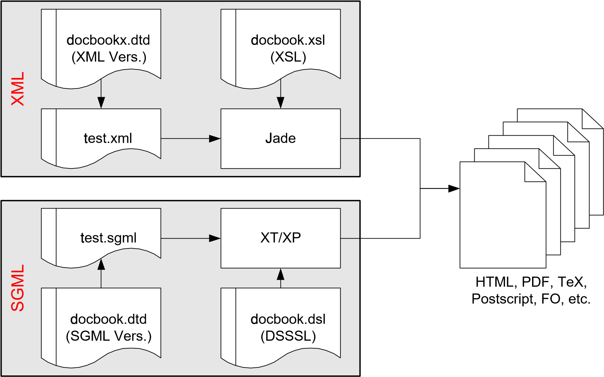

Vorwort
Danksagungen
Neben meinen Betreuern, Prof. Dr.-Ing. Heinz Gerhäuser, Dr. Hartmut Hess, Dr.-Ing. Heinrich Dietsch und Dipl.-Ing. Wolfram Strauß, gehört mein Dank der gesamten Open-Source-Gemeinde, die mich in Newsgroups, Mailinglisten und Mailkontakten tatkräftig unterstützt hat. Drei Personen möchte ich gesondert erwähnen.
Norman Walsh hat mir die Einarbeitung in das Thema XML/XSL durch das Beantworten meiner Fragen sehr einfach gemacht.
James Clark hat mich auf der XML-Werkzeugseite beraten und mir einen Überblick über die verfügbaren Software-Pakete ermöglicht.
Des weiteren gilt mein Dank Christian Forster, der mir in Sicherheits- und LDAP-Fragen immer hilfreich zur Seite stand.
Das Fraunhofer Institut für Integrierte Schaltungen
Diese Arbeit wurde im Fraunhofer Institut für Integrierte Schaltungen (IIS) in Erlangen/Tennenlohe durchgeführt. Das IIS ist eines von knapp 50 Fraunhofer Instituten in Deutschland und befasst sich mit mikroelektronischen Schaltungen und Systemen.
Viele der hier angesprochenen Details (z.B. Netzwerktopologie) beziehen sich auf das IIS und sind nicht allgemeingültig. Des weiteren verweisen einige Hyperlinks in diesem Dokument auf das Intranet des IIS und sind für den externen Leser nicht erreichbar. Es sind dies alle Links, die mit "http://www-local"beginnen.
Über dieses Dokument
Bei der Evaluierung verschiedener Softwareprodukte für die Erstellung dieses Dokuments zog ich drei verschiedene Lösungen in Betracht. Meine Entscheidung werde ich im Folgenden erläutern.
Den Gedanken, Microsoft Word als Textprozessor zu verwenden habe ich relativ schnell wieder verworfen, da das Verwalten von großen Dokumenten schwierig ist und auch die Dateigröße stark in das Verhalten von Word einfließt (Dateien mit vielen Grafiken sind sehr schwer zu handhaben).
Ein weiterer Punkt, der gegen die Verwendung von Microsoft Word sprach war das proprietäre Dateiformat, das für die Speicherung verwendet wird. Zugriff auf das Format mit anderen Werkzeugen (zum Beispiel durch das Versionskontrollsystem CVS ist somit nur bedingt möglich.
Das frei verfügbare Produkt LaTeX kannte ich bereits aus meiner Studienarbeit. Obwohl die Einarbeitung etwas mühselig ist, da es sich hierbei nicht um einen WYSIWYG-Prozessor ("What You See Is What You Get") handelt, steht mit LaTeX ein sehr robustes und zuverlässiges Werkzeug zur Verfügung. Besonders komfortabel lassen sich mit LaTeX wissenschaftliche Dokumente verfassen, weil es hervorragende Formelfunktionen bietet.
Da XML 1 in meiner Diplomarbeit eine große Rolle spielen sollte, lag die Entscheidung nahe, auch ein XML-basiertes Dokumentationssystem zu verwenden, um damit erste Erfahrungen zu sammeln. Weil es sich bei XML (im Gegensatz zu LaTeX) um eine relativ neue Technologie handelt, ist die Einstiegsschwelle noch größer, da es auf dem Markt nur wenige, frei verfügbare Werkzeuge gibt.
Die Energie, die ich in die Konfiguration eines solchen Dokumentationssystems gesteckt habe, möchte ich in einer kurzen Zusammenfassung bündeln.

Um in XML Dokumente erstellen zu können, wird eine Vorlage benötigt, die festlegt, welche Elemente (Tags) in dem Dokument erlaubt sind. Eine solche DTD ist Docbook. Sie eignet sich sehr gut zum Verfassen von technischen Dokumentationen. Formeln werden bis jetzt nicht unterstützt, sind aber mit MathML in der Vorbereitung.
In meiner Arbeit kam die Version 3.1 der Docbook DTD (in der SGML-Version) zum Einsatz. Norman Walsh hat aus der SGML-Version eine XML-Version abgeleitet.
Um aus einem gültigen XML Dokument ein anderes Format zu erzeugen, werden sogenannte Stylesheets benötigt. Diese können XML beispielsweise in HTML, PDF, TeX, etc. umwandeln. Allerdings gibt es verschiedene Stylesheetformate, die sich in unterschiedlichen Standardisierungszuständen befinden.
Bei diesem Dokument habe ich mich für DSSSL und gegen XSL Stylesheets entschieden, da diese in der Standardisierung fortgeschrittener waren. Für die Docbook DTD gibt es sowohl DSSSL-Stylesheets als auch XSL-Stylesheets.
Der Prozessor hat die Aufgabe, aus einem XML Dokument unter Zuhilfenahme eines Stylesheets ein bestimmtes Ausgangsformat (zum Beispiel HTML) zu erzeugen. Der zu verwendende Prozessor hängt von der Wahl des Stylesheets ab.
Kommt DSSSL zum Einsatz, so kann Jade von James Clark als Prozessor verwendet werden, bei XSL stellt die Kombination aus XT/XP (ebenfalls von James Clark) eine Alternative dar.
Da es sich bei XML um reines ASCII Format handelt, kann als Editor jeder beliebige Texteditor zum Einsatz kommen. Aus Komfortgründen habe ich mich für den Editor Emacs entschieden, den es auch in einer Version für Windows gibt.
Tipp: Eine sehr gute Beschreibung, wie unter Windows NT eine freie SGML/XML Umgebung installiert werden kann (mit allen hier erwähnten Komponenten) bietet das Tutorial SGML for NT: A brief tutorial how to set up a free SGML editing and publishing system for Windows NT.
Konventionen
Diese Sektion gibt einen Überblick über die in diesem Dokument verwendeten Konventionen.
Da es im Bereich der Internettechnologien sehr viele Abkürzungen gibt, ist es sehr unübersichtlich, jede Abkürzung direkt im Text zu erklären. Aus diesem Grund befinden sich die Erläuterungen im Glossar.
Um die Übersichtlichkeit der Textpassagen zu steigern, wird die Technik des Information Mapping 2 angewandt. Zu jedem logisch zusammengehörigen Absatz wird ein treffendes Schlagwort an den Seitenrand gesetzt, das die Navigation und das Nachschlagen im Text erleichtert und zur Reflexion anregt.
In vielen Fällen ist die Angabe von Internetlinks (URLs) nötig. Da aus dem Quelldokument (XML) der Diplomarbeit sowohl die Druck- als auch die Onlineversion (HTML) erzeugt wird, musste eine Entscheidung für die Präsentationsform getroffen werden. In der Onlineversion erscheint ein Link in gewohnter Form als Teil eines Satzes, auf dem per Mausklick die entsprechende Webseite göffnet wird.
In der Druckversion erscheint dieser Teil des Satzes als normaler Text, im Anschluss daran die URL in Klammern. Diese Konvention ermöglicht das Verwenden von Internetlinks in beiden Versionen.
-
Liam Quin. Extensible Markup Language (XML). URL: https://www.w3.org/XML. ↩
-
Martin Holzmann. Information Mapping: Vorteile durch effizientes Strukturieren. wissensmanagement. Das Magazin für Führungskräfte, pages 20–23, 2000. ↩